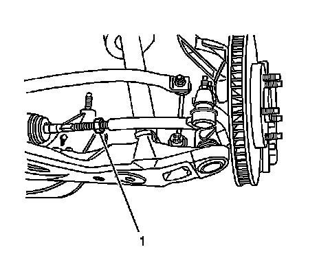
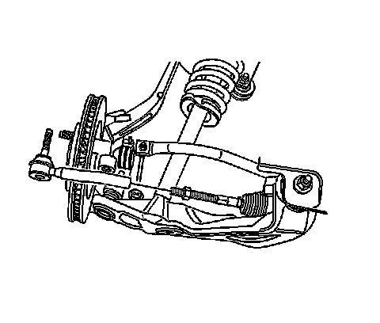
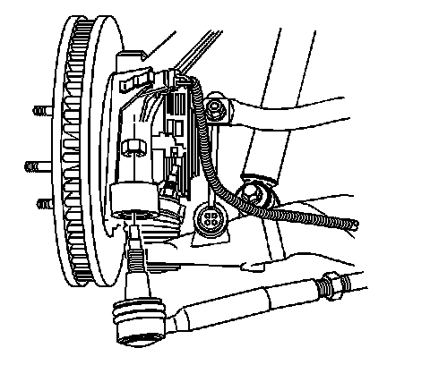

Tie Rod End: Service and Repair
Rack and Pinion Outer Tie Rod End Replacement
Tools Required
J 24319-B Steering Linkage and Tie Rod Puller
Removal Procedure
1. Remove the tire and wheel assembly. Refer to Tire and Wheel Removal and Installation (Service and Repair) .

2. Loosen the steering linkage inner tie rod nut (1).

3. Remove the rack and pinion outer tie rod end nut.

4. Disconnect the rack and pinion outer tie rod end from the steering knuckle using puller J 24319-B .

Important: Note the number of complete turns the rack and pinion outer tie rod end makes during the removal.
5. Remove the rack and pinion outer tie rod end from the steering linkage inner tie rod.
Installation Procedure
Important: Install the same number of complete turns the rack and pinion outer tie rod end needed to remove as noted above.
1. Install the rack and pinion outer tie rod end to the steering linkage inner tie rod. Do not tighten the steering linkage inner tie rod nut at this time.
2. Connect the rack and pinion outer tie rod end to the steering knuckle.

Notice: Refer to Fastener Notice (Fastener Notice) .
3. Install the rack and pinion outer tie rod end nut.
Tighten the nut to 55 N.m (41 lb ft).
4. Tighten the steering linkage inner tie rod nut (1).
5. Install the tire and wheel assembly. Refer to Tire and Wheel Removal and Installation (Service and Repair) .
6. Adjust the front toe. Refer to Front Toe Adjustment (Service and Repair) .